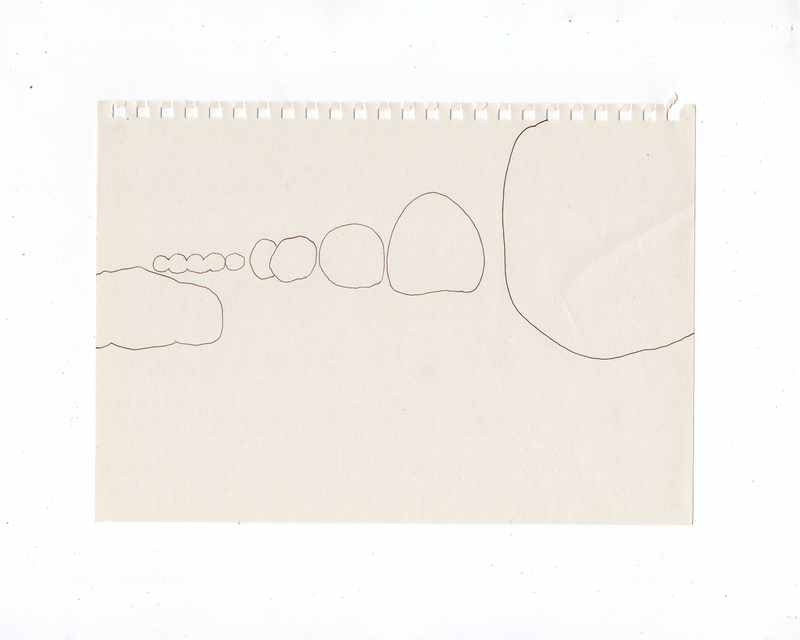
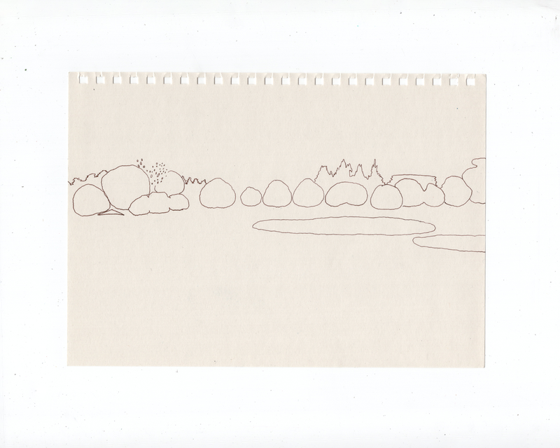
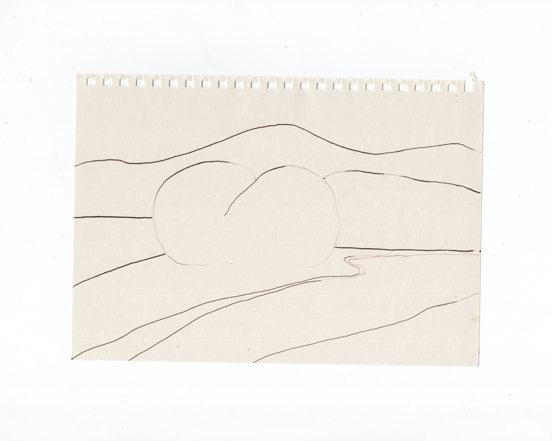
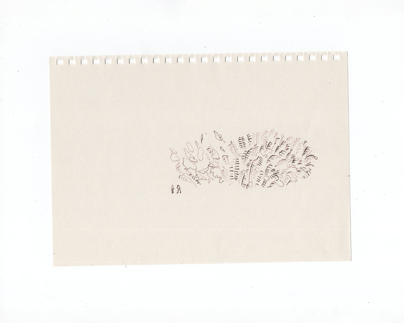
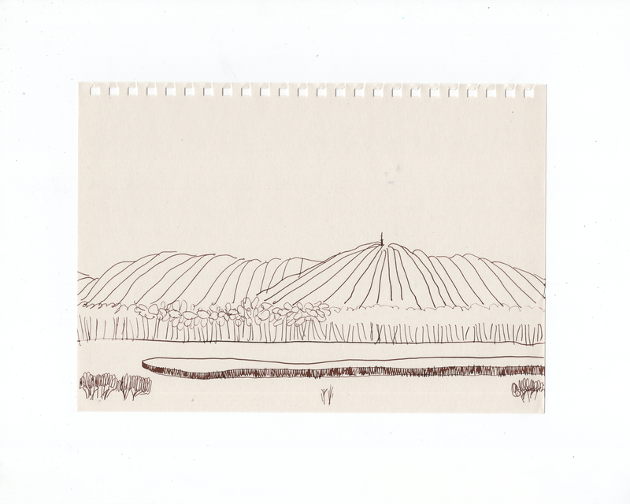
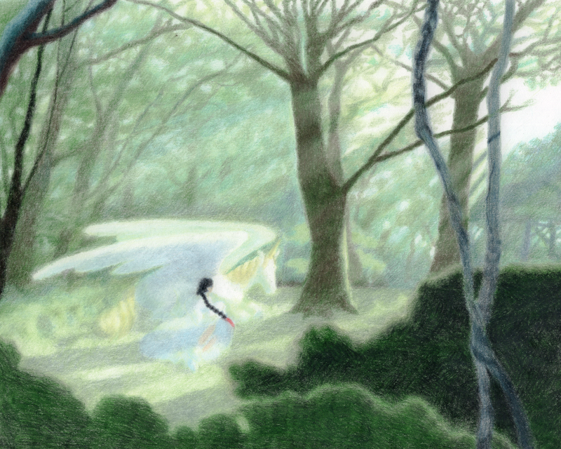
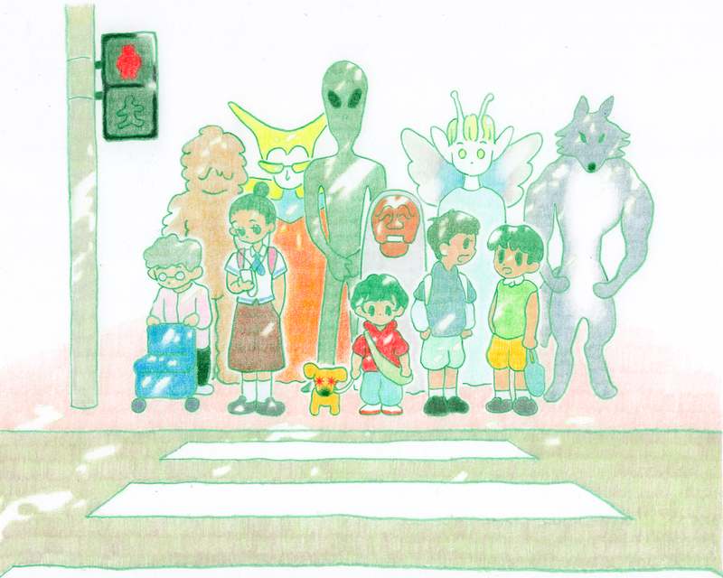

BOYOUNG
info
Stitch Drawing No.1
2026 A handmade fabric coaster stitched in Bali, created one intuitive stitch at a time
3 Times 1 Day
2025 A drawing practice for completing a sheet of paper across three sessions in one day
Fashion Girls
2025 A series of illustrations inspired by fashionable girls





Landscapes
2025 A series of landscape drawings

Bizarim
2025 An illustration inspired by Bizarim, Jeju
What's in Bali?
2025 Illustrations of animals, plants and dishes in Bali, 2025

Crosswalk
2025 An illustration for children who wait for the signal at crosswalks
Ladies' Tea Time
2025 An illustration for children who would like to have tea time with cool ladies
Why It Rains?
2025 An illustration for children who wonder why it rains
9 Endangered Animals in Korea
2025 Illustrations of endangered animals in Korea
Windy Day
2025 A sequence illustration of a girl on a windy day
Shiny Eyes
2025 A series of illustrations with shiny eyes.
who (are) gathered?
2025 A collection of the animals and plants featured in ｢house gathering｣
gathering room
2025 A book composed of the individual rooms from <｢house gathering｣
house gathering
2025 A solo exhibition ｢house gathering｣
Wrapping Paper
2024 Wrapping paper design for Shop Makers.
Nabi Face
2024 A moving illustration of faces with butterfly wings
1004 dog
2024 A moving illustration of an angel dog and others
gazpacho party invitation
2024 An invitation card for gazpacho party.